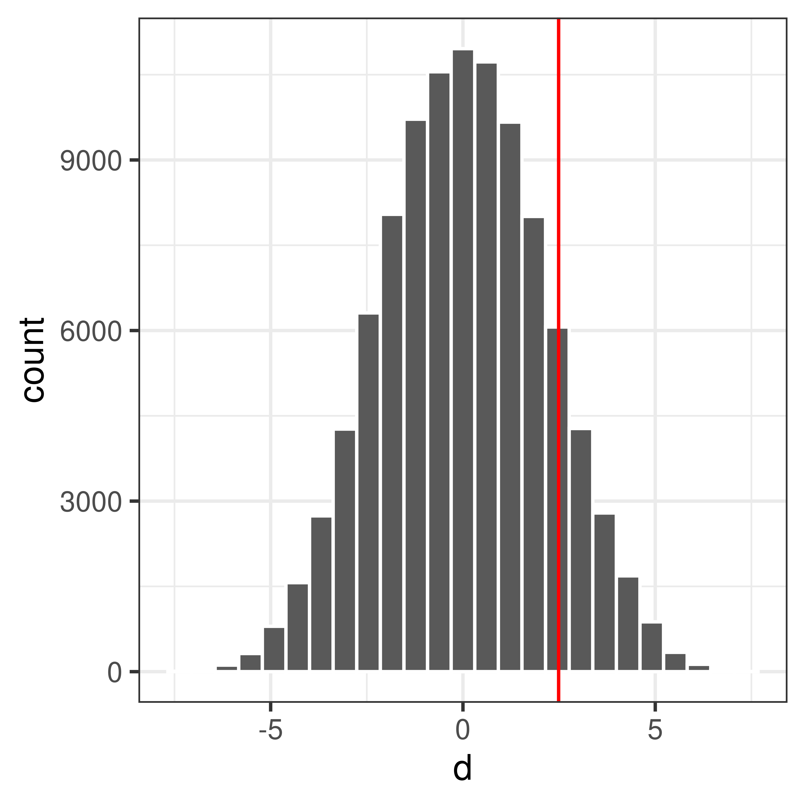
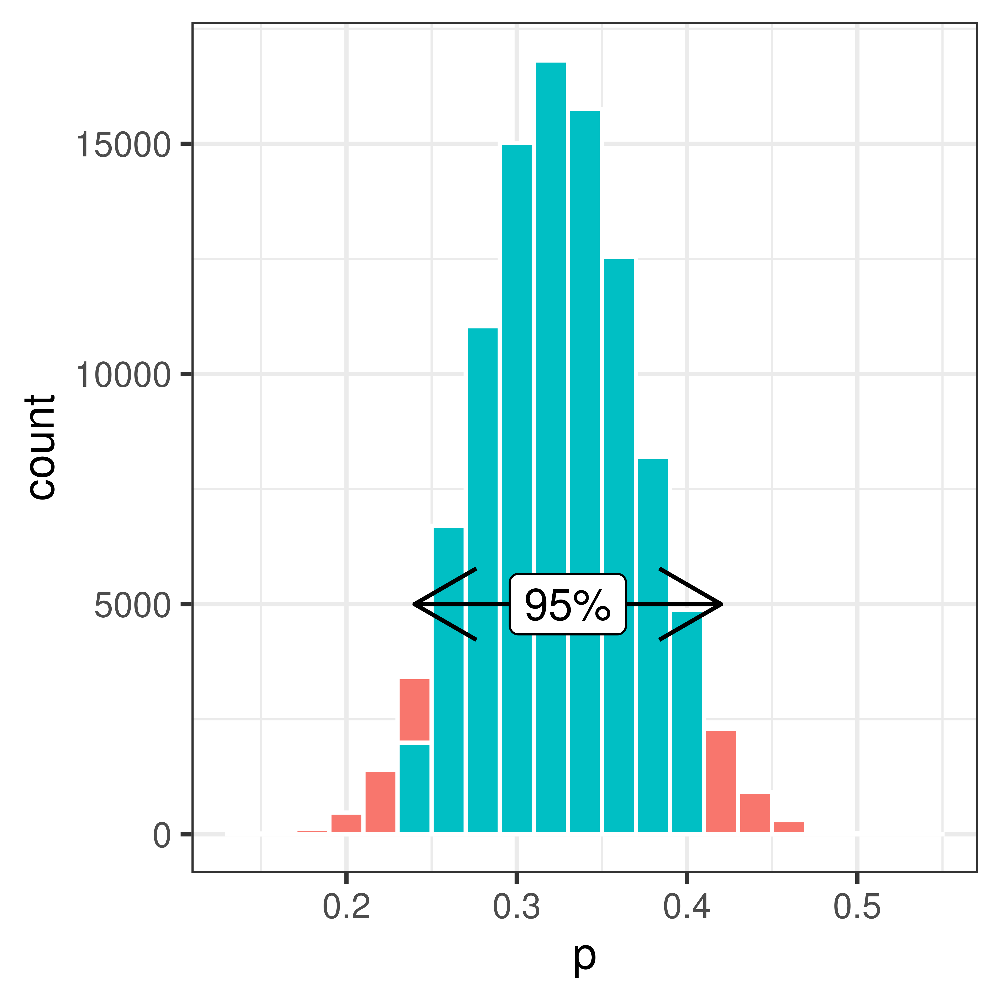
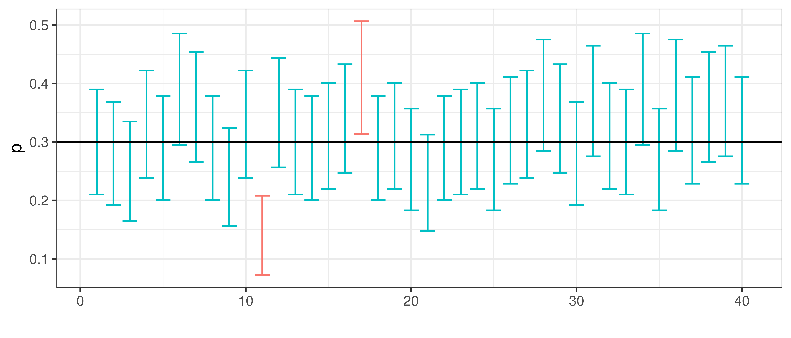

Chapter 3 Statistical Inference
Learning outcomes:
- to define null and alternative hypothesis
- to perform a hypothesis test using resampling
- to perform a t-test
- to understand and define sampling distribution and standard error
- to compute standard error of mean and proportions
- to compute confidence interval of mean and proportions using the normal approximation
- to compute confidence interval of mean using the t-distribution
Statistical inference is to draw conclusions regarding properties of a population based on observations of a random sample from the population.
3.1 Hypothesis test
To perform a hypothesis test is to evaluate a hypothesis based on a random sample.
Typicaly, the hypotheses that are tested are assumptions about properties of the population, such as proportion, mean, mean difference, variance etc.
3.1.1 The null and alternative hypothesis
There are two hypotheses involved in a hypothesis test, the null hypothesis, \(H_0\), and the alternative hypothesis, \(H_1\).
The null hypothesis is in general neutral, “no change”, “no difference between groups”, “no association”. In general we want to show that \(H_0\) is false.
The alternative hypothesis expresses what the researcher is interested in “the treatment has an effect”, “there is a difference between groups”, “there is an association”. The alternative hypothesis can also be directional “the treatment has a positive effect”.
3.1.2 To perform a hypothesis test
- Define \(H_0\) and \(H_1\)
- Select appropriate test statistic, \(T\), and compute the observed value, \(t_{obs}\)
- Assume that the \(H_0\) is true and compute the sampling distribution of \(T\).
- Select an appropriate significance level, \(\alpha\)
- Compare the observed value, \(t_{obs}\), with the computed sampling distribution under \(H_0\) and compute a p-value. The p-value is the probability of observing a value at least as extreme as the observed value, if \(H_0\) is true.
- Based on the p-value either accept or reject \(H_0\).
Definition 3.1 Sampling distribution
A sampling distribution is the distribution of a statistic of a large number of samples drawn from a specific population.Definition 3.2 Null distribution
The null distribution is a sampling distribution when the null hypothesis is true.
Figure 3.1: A null distribution
Definition 3.3 p-value
The p-value is the probability of the observed value, or something more extreme, if the null hypothesis is true.
Figure 3.2: The p-value is the probability to observe \(x_{obs}\) or something more extreme, if the null hypothesis is true.
3.1.3 Significance level and error types
| H0 is true | H0 is false | |
| Accept H0 | Type II error, miss | |
| Reject H0 | Type I error, false alarm |
The significance level, \(\alpha\) = P(false alarm) = P(Reject \(H_0\)|\(H_0\) is true).
The significance level is the risk to of false alarm, i.e. to say “I have a hit”, “I found a difference”, when the the null hypothesis (“there is no difference”) is true. The risk of false alarm is controll by setting the significance level to a disired value. We do want to keep the risk of false alarm (type I error) low, but at the same time we don’t want to many missed hits (type II error).
The significance level should be set before the hypothesis test is performed. Common values to use are 0.05 or 0.01.
If the p-value is above the significance level, \(H_0\) is accepted.
If the p-value is below the significance level, \(H_0\) is rejected.
3.1.4 Hypothesis test, simulation examples
In these examples the significance level is set to 0.05.
Example 3.1 (Simulation example) Pollen allergy
Let’s assume we know that the proportion of pollen allergy in Sweden is \(0.3\). We suspect that the number of pollen allergic has increased in Uppsala in the last couple of years and want to investigate this.
Observe 100 people from Uppsala, 42 of these were allergic to pollen. Is there a reason to believe that the proportion of pollen allergic in Uppsala \(\pi > 0.3\)?Null and alternative hypotheses
\(H_0:\) The proportion of pollen allergy in Uppsala is the same as in Sweden as a whole.
\(H_1:\) The proportion of pollen allergy in Uppsala is not the same as in Sweden as a whole.
or expressed differently;
\[H_0:\, \pi=\pi_0\]
\[H_1:\, \pi>\pi_0\] where \(\pi\) is the unknown proportion of pollen allergy in the Uppsala population that. \(\pi_0 = 0.3\) is the proportion of pollen allergy in Sweden.
Test statistic
Here we are interested in the proportion of pollen allergic in Uppsala. An appropriate test statistic could be the number of pollen allergic in a sample of size \(n=100\), \(X\). As an alternative we can use the proportion of pollen allergic in a sample of size \(n\),
\[P = \frac{X}{n}\]
Let’s use \(P\) as our test statistic and compute the observed value, \(p_{obs}\). In our sample of 100 people from Uppsala the proportion allergic to pollen is \(p=42/100=0.42\).
Null distribution
The sampling distribution of \(P\) under \(H_0\) (i.e. when the null hypothesis is true) is what we call the null distribution.
\(H_0\) state that \(\pi=0.3\). We can model this using an urn model as follows;

Figure 3.3: An urn model of the null hypothesis \(\pi=0.3\). The black balls represent allergic and the white balls non-allergic.
Using this model, we can simulate taking a sample of size 100 many times.
## [1] 0 0 0 0 0 0 0 1 1 1## [1] 1 0 0 1 1 0 0 0 1 1 0 0 0 0 1 1 0 0 0 1 1 0 0 1 1 1 0 1 0 1 0 0 1 0 1 0 0
## [38] 0 0 0 0 0 1 0 0 0 1 0 0 0 1 1 1 0 0 0 0 0 0 0 0 1 0 0 0 0 0 1 1 0 0 0 1 0
## [75] 1 1 1 1 0 0 1 0 0 1 0 0 1 0 0 0 0 0 1 0 0 0 0 0 0 0## Compute proportion of samples that are allergic (1)
sum(sample(rep(c(0, 1), c(7, 3)), 100, replace=TRUE))/100## [1] 0.34## Draw samples of size 100 and compute proporion allergic 100000 times
p <- replicate(100000, mean(sample(rep(c(0, 1), c(7, 3)), 100, replace=TRUE)))Finally plot the distribution
Figure 3.4: The sampling distribution.
Compute p-value
Compare the observed value, \(p_{obs} = 0.42\) to the null distribution.

Figure 3.5: The sampling distribution. The observed value is marked by a red vertical line.
The p-value is the probability of getting the observed value or higher, if the null hypothesis is true.
Use the null distribution to calculate the p-value, \(P(P \geq 0.42|H_0)\).
## [1] 711## [1] 0.0071p = \(P(P \geq 0.42|H_0)\) = 0.00711
Accept or reject \(H_0\)?
Example 3.2 (Permutation test) Do high fat diet lead to increased body weight?
Study setup:
- Order 24 female mice from a lab.
- Randomly assign 12 of the 24 mice to receive high-fat diet, the remaining 12 are controls (ordinary diet).
- Measure body weight after one week.
Null and alternative hypotheses
\[ \begin{aligned} H_0: \mu_2 = \mu_1 \iff \mu_2 - \mu_1 = 0\\ H_1: \mu_2>\mu_1 \iff \mu_2-\mu_1 > 0 \end{aligned} \]
where \(\mu_2\) is the (unknown) mean body weight of the high-fat mouse population and \(\mu_1\) is the mean body-weight of the control mouse population.
Studied population: Female mice that can be ordered from a lab.
Test statistic
Here we are interested in the mean difference between high-fat and control mice.
Mean weight of 12 (randomly selected) mice on ordinary diet, \(\bar X_1\). \(E[\bar X_1] = E[X_1] = \mu_1\)
Mean weight of 12 (randomly selected) mice on high-fat diet, \(\bar X_2\). \(E[\bar X_2] = E[X_2] = \mu_2\)
The mean difference is also a random variable: \(D = \bar X_2 - \bar X_1\)
The observed values, mouse weights in grams, are summarized below;
| high-fat | 25 | 30 | 23 | 18 | 31 | 24 | 39 | 26 | 36 | 29 | 24 | 32 |
| ordinary | 27 | 25 | 22 | 23 | 25 | 37 | 24 | 26 | 22 | 26 | 30 | 24 |
Mean weight of control mice (ordinary diet): \(\bar x_1 = 25.83\)
Mean weight of mice on high-fat diet: \(\bar x_2 = 28.00\)
Difference in mean weights: \(d_{obs} = \bar x_2 - \bar x_1 = 2.17\)
Null distribution
If high-fat diet has no effect, i.e. if \(H_0\) was true, the result would be as if all mice were given the same diet. What can we expect if all mice are fed with the same type of food?
This can be accomplished using permutation
The 24 mice were initially from the same population, depending on how the mice are randomly assigned to high-fat and normal group, the mean weights would differ, even if the two groups were treated the same.
Assume \(H_0\) is true, i.e. assume all mice are equivalent and
- Randomly reassign 12 of the 24 mice to ‘high-fat’ and the remaining 12 to ‘control’.
- Compute difference in mean weights
If we repeat 1-2 many times we get the sampling distribution when \(H_0\) is true, the so called null distribution, of difference in mean weights.

Compute p-value
What is the probability to get an at least as extreme mean difference as our observed value, \(d_{obs}\), if \(H_0\) was true?
$P(X_2 - X_2 d_{obs} | H_0) = $0.126
Conclusion?
3.2 Parametric distributions
In previous chapters we have computed the sampling distribution using resampling techniques to be able to perform hypothesis tests or compute interval estimates. If the null distribution was already known (or could be computed based on a few assumptions) resampling would not be necessary.
We can follow the same steps as before to perform a hypothesis test:
- Define \(H_0\) and \(H_1\)
- Select appropriate test statistic, \(T\), and compute the observed value, \(t_{obs}\)
- Assume that the \(H_0\) and derive the null distribution of the test statistic based on appropriate assumptions.
- Select an appropriate significance level, \(\alpha\)
- Compare the observed value, \(t_{obs}\), with the null distribution and compute a p-value. The p-value is the probability of observing a value at least as extreme as the observed value, if \(H_0\) is true.
- Based on the p-value either accept or reject \(H_0\).
3.2.1 One sample, proportions
Example 3.3 Let’s get back to the pollen example!
Assume that the proportion of pollen allergy in Sweden is known to be \(0.3\). Observe 100 people from Uppsala, 42 of these were allergic to pollen. Is there a reason to believe that the proportion of pollen allergic in Uppsala \(\pi > 0.3\)?The number of allergic individuals in a sample of size \(n\) is \(X\) and the proportion of allergic persons is \(P = X/n\). \(X\) is binomially distributed, but here we can use the Central limit theorem, see 1.1.
As a result of the central limit theorem, the distribution of number or proportion of allergic individuals in a sample of size \(n\) is approximately normal. At least if the sample is large enough. A rule of thumb is that the sample size should be \(n>30\).
Here, the sample size is 100!
The normal distribution has two parameters, mean and standard deviation.
From the binomial distribution we know that \(E[X] = \pi\) and \(var(X) = n\pi(1-\pi)\). Hence \(E[P] = \pi\) and \(var(P) = \frac{\pi(1-\pi)}{n}\).
The standard error is thus
\[SE=\sqrt{\frac{\pi(1-\pi)}{n}}\]
When the null hypothesis is true \(\pi\) is known and \(\pi=0.3\).
Actually these calculations are true in general when a proportion in one sample is compared to a known value.
\[H_0: \pi=\pi_0 \\ H_1: \pi>\pi_0 \]
Ather potential alternative hypothesis are \(H_1: \pi<\pi_0\) or \(H_1:\pi \neq \pi_0\), but in this particular xample we are only interested in the alternative that \(\pi > \pi_0\).
If \(H_0\) is true \(\pi=\pi_0\) and
\[P \sim N\left(\pi_0, \sqrt{\frac{\pi_0(1-\pi_0)}{n}}\right)\] An appropriate test statistic is
\[Z = \frac{P-\pi_0}{\sqrt{\frac{\pi_0(1-\pi_0)}{n}}}\]
\(Z \in N(0,1)\) which makes probabilities easy to compute.
Back to our example, replace \(P\) with our observed value \(p=0.42\) and \(\pi_0=0.3\) and compute our observed
\[Z_{obs} = \frac{0.42-0.3}{\sqrt{\frac{0.3(1-0.3)}{100}}} = 2.62\]
The p-value is the probability of the observed value, or something more extreme, if the null hypothesis is true. If the computed probability is below \(\alpha=0.05\) our significance threshold, \(H_0\) will be rejected.
\[p = P(P>\pi_0) = P(Z>Z_{obs}) = P(Z>2.62) = 1 - P(Z \leq 2.62) = [table] = 1 - 0.996 = 0.0044\]
As 0.0044<0.05 we reject \(H_0\) and conclude that there is reason to believe that the proportion of allergic in Uppsala is greater than 0.3.
3.2.2 One sample, mean
A one sample test of means compares the mean of a sample to a prespecified value.
For example, we might know that the weight of a mouse on normal diet is normally distributed with mean 24.0 g and standard deviation 3 g and want to compare the weight of a sample of 10 mice on high-fat diet to the known mean value for mice on normal diet.
The hypotheses:
\[ H_0: \mu = \mu_0 \\ H_1: \mu \neq \mu_0\]
The alternative hypothesis, \(H_1,\) above is for the two sided hypothesis test. Other options are the one sided \(H_1\); \(H_1: \mu > \mu_0\) or \(H_1: \mu < \mu_0\).
If \[X \sim N(\mu, \sigma)\] (this could for example be the weight of a mouse on high-fat diet) then the sample mean \[\bar X \sim N\left(\mu, \frac{\sigma}{\sqrt{n}}\right)\].
If \(\sigma\) is known the test statistic
\[Z = \frac{\bar X - \mu}{\frac{\sigma}{\sqrt{n}}}\] is normally distributed, \(\sim N(0,1)\).
For small \(n\) and unknown \(\sigma\), the test statistic
\[t = \frac{\bar X - \mu}{\frac{s}{\sqrt{n}}}\]
is t-distributed with \(df=n-1\) degrees of freedom.
3.2.3 Two samples, proportions
\[H_0: \pi_1 - \pi_2 = 0\\ H_1: \pi_1 - \pi_2 \neq 0\]
Alternatively, a one sided alternative hypothesis can be used; \(H_1: \pi_1 - \pi_2 >0\) or \(H_1: \pi_1 - \pi_2 < 0\).
Test statistic
\[Z = \frac{P_1 - P_2}{\sqrt{P(1-P)\left (\frac{1}{n_1} + \frac{1}{n_2}\right)}}\]
where \(P\) is the proportion in the merged sample of size \(n_1 + n_2\). \(Z \in N(0,1)\) and p-value can be computed using the standard normal distribution.
3.2.4 Two samples, mean
A two sample test of means is used to determine if two population means are equal.
Two independent samples are collected (one from each population) and the means are compared. Can for example be used to determine if a treatment group is different compared to a control group, in terms of the mean of a property of interest.
The null hypothesis;
\[H_0: \mu_2 = \mu_1\] The alternative hypothesis can either be two sided
\[H_1: \mu_2 \neq \mu_1\] or one sided
\[H_1: \mu_2 > \mu_1\] or
\[H_1: \mu_2 < \mu_1\]
Assume that observations from both populations are normally distributed;
\[ \begin{aligned} X_1 \sim N(\mu_1, \sigma_1) \\ X_2 \sim N(\mu_2, \sigma_2) \end{aligned} \] Then it follows that the sample means will also be normally distributed;
\[ \begin{aligned} \bar X_1 \sim N(\mu_1, \sigma_1/\sqrt{n_1}) \\ \bar X_2 \sim N(\mu_2, \sigma_2/\sqrt{n_2}) \end{aligned} \]
The mean difference \(D = \bar X_2 - \bar X_1\) is thus also normally distributed:
\[D = \bar X_2 - \bar X_1 = N\left(\mu_2-\mu_1, \sqrt{\frac{\sigma_2^2}{n_2} + \frac{\sigma_1^2}{n_1}}\right)\]
If \(H_0\) is true: \[D = \bar X_2 - \bar X_1 = N\left(0, \sqrt{\frac{\sigma_2^2}{n_2} + \frac{\sigma_1^2}{n_1}}\right)\]
The test statistic: \[Z = \frac{\bar X_2 - \bar X_1}{\sqrt{\frac{\sigma_2^2}{n_2} + \frac{\sigma_1^2}{n_1}}}\] is standard normal, i.e. \(Z \sim N(0,1)\).
However, note that the test statistic require the standard deviations \(\sigma_1\) and \(\sigma_2\) to be known.
What if the population standard deviations are not known?
If the sample sizes are large, we can replace the known standard deviations with our sample standard deviations and according to the central limit theorem assume that
\[Z = \frac{\bar X_2 - \bar X_1}{\sqrt{\frac{s_2^2}{n_2} + \frac{s_1^2}{n_1}}} \sim N(0,1)\]
and proceed as before.
For small sample sizes the test statistic will be t-distributed.
\[t = \frac{\bar X_2 - \bar X_1}{\sqrt{\frac{s_2^2}{n_2} + \frac{s_1^2}{n_1}}}\]
For small sample sizes we can use Student’s t-test, which requires us to assume that \(X_1\) and \(X_2\) both are normally distributed and have equal variances. With these assumptions we can compute the pooled variance
\[ s_p^2 = \frac{(n_1-1)s_1^2 + (n_2-1)s_2^2}{n_1+n_2-2} \]
and the test statistic
\[t = \frac{\bar X_1 - \bar X_2}{\sqrt{s_p^2(\frac{1}{n_1} + \frac{1}{n_2})}}\]
\(t\) is t-distributed with \(n_1+n_2-2\) degrees of freedom.
The t-test is implemented in R, e.g. in the function t.test in the R-package stats, both Student’s t-test with equal variances and Welch’s t-test with unequal variances.
3.2.5 Variance
The test of equal variance in two groups is based on the null hypothesis
\[H_0: \sigma_1^2 = \sigma_2^2\]
If the two samples both come from two populations with normal distributions, the sample variances
\[S_1^2 = \frac{1}{n_1-1} \sum_{i=1}^{n_1} (X_{1i}-\bar X_1)^2\\ S_2^2 = \frac{1}{n_2-1} \sum_{i=1}^{n_2} (X_{2i}-\bar X_2)^2\]
It can be shown that \(\frac{(n_1-1)S_1^2}{\sigma_1^2} ~ \chi^2(n_1-1)\) and \(\frac{(n_2-1)S_2^2}{\sigma_2^2} ~ \chi^2(n_2-1)\).
Hence, the test statistic for comparing the variances of two groups
\[F = \frac{S_1^2}{S_2^2}\] is \(F\) is F-distributed with \(n_1-1\) and \(n_2-1\) degrees of freedom.
In R a test of equal variances can be performred using the function var.test.
3.2.6 Exercises
| high-fat | 25 | 30 | 23 | 18 | 31 | 24 | 39 | 26 | 36 | 29 | 23 | 32 |
| ordinary | 27 | 25 | 22 | 23 | 25 | 37 | 24 | 26 | 21 | 26 | 30 | 24 |
Does high fat diet increase body weight in mice?
- Assume equal variances.
- Don’t assume equal variances.
3.3 Point and interval estimates
As seen in previous chapter, the sample proportion or mean is an unbiased estimate of the population values. When we only have a sample, the sample estimate will be our best guess of the population value, but it will not be without error.
If we are interested in how large proportion of the Uppsala population is allergic to pollen, we can investigate this by studying a random sample. Randomly select 100 persons in Uppsala. It is important to actually sample randomly, ideally every individual should have the same probability of being sampled.
In our sample, we observe that 42 of the 100 has a pollen allergy. Hence, the observed sample proportion is \(p=0.42\).
Based on this observation our point estimate of the Uppsla popultation proportion \(\pi\) is \(\pi \approx p = 0.42\). We know that there is a certain uncertainty in this measurement, if the experiment is repeated we would select 100 other persons and our point estimate would be slihtly different.
3.3.1 Bootstrap interval
Using bootstrap we can sample with replacement from our sample to estimate the uncertainty.
Bootstrap is to use the data we have (our sample) and sample repeatedly with replacement from this data.
Put the entire sample in an urn!

Figure 3.6: An urn model with 42 allergy (black) and 58 non-allergy (white). The black balls represent allergic and the white balls non-allergic.
Sample from the urn with replacement to compute the bootstrap distribution.

Using the bootstrap distribution the uncertainty of our estimate of \(\pi\) can be estimated.
The 95% bootstrap interval is [0.24, 0.42].
The bootstrap is very useful if you do not know the distribution of our sampled propery. But in our example we actually do.
3.3.2 Confidence interval
A confidence interval is a type of interval estimate associated with a confidence level.
3.3.2.1 Confidence interval of proportions
Remember that we can use the central limit theorem to show that
\[P \sim N\left(\pi, SE\right) \iff P \sim \left(\pi, \sqrt{\frac{\pi(1-\pi)}{n}}\right)\]
It follows that
\[Z = \frac{P - \pi}{SE} \sim N(0,1)\] Based on what we know of the standard normal distribution, we can compute an interval around the population property \(\pi\) such that the probability that a sample property \(p\) fall within this interval is \(1-\alpha\).
\[P(-z < \frac{P - \pi}{SE} < z) = 1 - \alpha\] For a 95% confidence interval z=1.96 (from a table of the standard normal distribution). Other confidence levels of interest include 90% (z=1.64) and 99% (z=2.58).
\[P\left(-z < \frac{P-\pi}{SE}<z\right) = \left(-z < Z <z\right) = 1-\alpha\] We can rewrite this to
\[P\left(\pi-z SE < P < \pi + z SE\right) = 1-\alpha\] in other words sample fraction \(p\) will fall between \(\pi \pm 1.96 SE\) with 95% probability.
The equation can also be rewritten to \[P\left(P-z SE < \pi < P + z SE\right) = 1 - \alpha\] The observed confidence interval is what we get when we replace the random variable \(P\) with our observed fraction,
\[p-z SE < \pi < p + z SE\] \[\pi = p \pm z SE = p \pm z \sqrt{\frac{p(1-p)}{n}}\] The 95% confidence interval \[\pi = p \pm 1.96 \sqrt{\frac{p(1-p)}{n}}\]
A 95% confidence interval will have 95% chance to cover the true value.

Back to our example of proportion pollen allergic in Uppsala. \(p=0.33\) and \(SE=\sqrt{\frac{p(1-p)}{n}} = 0.05\).
Hence, the 95% confidence interval is \[\pi = 0.33 \pm 1.96 * 0.05 = 0.33 \pm 0.092\] or \[(0.33-0.092, 0.33+0.092) = (0.24, 0.42)\]
3.3.2.1.1 Confidence interval of mean
The confidence interval of mean can be derived similarly.
The mean of a sample of \(n\) independent and identically normal distributed observations \(X_i\) is normally distributed;
\[\bar X \sim N(\mu, \frac{\sigma}{\sqrt{n}})\]
If \(\sigma\) is unknown the statistic
\[\frac{\bar X - \mu}{\frac{\sigma}{\sqrt{n}}} \sim t(n-1)\] is t-distributed with \(n-1\) degrees of freedom.
It follows that
\[ \begin{aligned} P\left(-t < \frac{\bar X - \mu}{\frac{\sigma}{\sqrt{n}}} < t\right) = 1 - \alpha \iff \\ P\left(\bar X - t \frac{\sigma}{\sqrt{n}} < \mu < \bar X + t \frac{\sigma}{\sqrt{n}}\right) = 1 - \alpha \end{aligned} \]
The confidence interval with confidence level \(1-\alpha\) is thus;
\[\mu = \bar x \pm t \frac{s}{\sqrt{n}}\]
For a 95% confidence interval and \(n=5\) \(t\) is 2.78.
The \(t\) values for different values of \(\alpha\) and degrees of freedom are tabulated and can be computed in R using the function qt.
## [1] 2.8